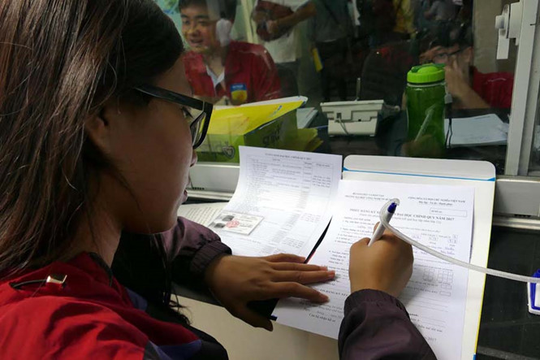

Những lưu ý khi điều chỉnh nguyện vọng

Viết bởi Administrator Thứ tư, 12 Tháng 7 2017 13:30
Mỗi thí sinh chỉ được phép thay đổi nguyện vọng một lần, khi thay đổi, có thể điều chỉnh trường, ngành, thứ tự ưu tiên... là những lưu ý quan trọng Bộ GD-ĐT muốn nhấn mạnh với thí sinh, vào chiều qua (10.7).

Trước băn khoăn của nhiều thí sinh (TS) có điểm thi tốt hơn dự kiến thì liệu có nên điều chỉnh đăng ký xét tuyển nữa không, Bộ GD-ĐT khuyên TS cần so sánh phổ điểm của năm 2017 với 2016. Nếu từ mức điểm của chính TS (theo tổ hợp xét tuyển) trở lên có số lượng tương đồng với số TS năm 2016 có mức điểm đủ để trúng tuyển vào trường, ngành mà TS đã chọn, thì TS có thể yên tâm và không phải thay đổi nguyện vọng (NV).
Chọn 1 trong 2 phương thức
Nếu TS không thêm NV, có nghĩa bỏ bớt một NV đã đăng ký để thêm NV khác, thì thực hiện theo phương thức trực tuyến. TS sử dụng số chứng minh nhân dân và mã truy cập được cấp khi đăng ký dự thi để thực hiện. Thời gian đăng ký trực tuyến từ 15.7 đến hết ngày 21.7. Với phương thức này, TS không được tăng số NV so với đăng ký ban đầu và không thay đổi được chế độ ưu tiên.
Trường hợp muốn thêm NV, TS cần đến điểm đăng ký dự thi điền thông tin và nộp phiếu đăng ký điều chỉnh NV từ 15 - 23.7.
TS có thể điều chỉnh chế độ ưu tiên của mình nếu thông tin đăng ký trước đó bị sai lệch. Để điều chỉnh được các thông tin này, TS điền các thông tin cần điều chỉnh vào phiếu đề nghị điều chỉnh
NV đăng ký xét tuyển (mẫu phiếu có thể tải từ địa chỉ https://thituyensinh.vn), sau đó đến điểm tiếp nhận đăng ký dự thi để nộp phiếu từ ngày 15 - 23.7. Khi đến điểm tiếp nhận, cần mang theo chứng minh nhân dân, các minh chứng về ưu tiên và phiếu đăng ký dự thi (phiếu số 2) kèm theo đăng ký xét tuyển.
Trường hợp TS vừa muốn thay đổi NV vừa muốn thay đổi chế độ ưu tiên thì không thể dùng phương thức điều chỉnh trực tuyến mà bắt buộc phải đến các điểm tiếp nhận phiếu điều chỉnh NV, vì mỗi TS bắt buộc chỉ được dùng một phương thức điều chỉnh NV chứ không được phép dùng đồng thời 2 phương thức, dù cho 2 mục đích điều chỉnh khác nhau.
Các nguyện vọng bình đẳng nhau giữa các thí sinh
Bộ GD-ĐT lưu ý, trong đợt thay đổi NV, mỗi TS chỉ được đổi NV duy nhất một lần. Để hỗ trợ cho TS điều chỉnh NV, tại các điểm đăng ký dự thi (nơi tiếp nhận phiếu điều chỉnh NV) các trường sẽ bố trí cán bộ để hướng dẫn. Ngoài ra, trên cổng thông tin tuyển sinh của Bộ (https://thituyensinh.vn) có đăng tải tài liệu hướng dẫn điều chỉnh NV và từ ngày 9.7 đến hết 11.7 TS có thể thực hành điều chỉnh NV trực tiếp trên hệ thống. Sau ngày 11.7, hệ thống sẽ khóa và những dữ liệu đã thực hành sẽ bị xóa hoàn toàn. Từ 15.7, TS mới bắt đầu thực sự tiến hành điều chỉnh NV trực tuyến.
Trước băn khoăn của nhiều TS về ý nghĩa của thứ tự các NV, Bộ GD-ĐT khẳng định thứ tự ưu tiên của NV chỉ có giá trị với chính TS đó. Còn giữa các TS, việc xét tuyển vào cùng ngành là bình đẳng, không phân biệt thứ tự ưu tiên NV. Chẳng hạn nếu TS B đã trúng tuyển một trong các NV từ 1 đến 3 sẽ không được xét tuyển NV4 nữa. Còn nếu cả 3 NV trên TS B đều không trúng tuyển, thì sẽ được xét tuyển vào ngành đăng ký NV4. Khi xét tuyển NV này, TS A (NV1) và TS B đều được xét tuyển bình đẳng như nhau, ai điểm cao hơn sẽ được lợi thế hơn.
Phương án xét tuyển năm 2017 cho phép TS đăng ký không hạn chế số NV, nhưng phải sắp xếp NV theo thứ tự ưu tiên từ trên xuống và trường hợp TS đủ điểm để trúng tuyển vào nhiều NV cũng chỉ được quyền vào học ngành có NV với thứ tự ưu tiên cao nhất. Nếu điểm của TS cao và có khả năng trúng tuyển vào cả 3 trường thì vẫn chỉ trúng tuyển vào NV1. Chính vì vậy TS phải cân nhắc kỹ khi xác định thứ tự ưu tiên của các NV khi đăng ký xét tuyển và khi điều chỉnh NV xét tuyển.
Các mốc thời gian quan trọng
- 12.7: Bộ GD-ĐT công bố ngưỡng điểm xét tuyển tối thiểu.
- Trước nitnbk.edu.vn trường công bố điểm nhận hồ sơ.
- 8 giờ ngày 15.7 - 17 giờ ngày 21.7: TS điều chỉnh NV trực tuyến.
- 15.7 đến 17 giờ ngày 23.7: TS điều chỉnh NV bằng phiếu tại điểm thu nhận.
- Trước 17 giờ ngày 25.7: TS kiểm tra kết quả điều chỉnh NV.
- Trước 17 giờ ngày 1.8: các trường công bố kết quả.
Hà Ánh (ghi)
Nguồn: Quý Hiên (thanhnien.vn)
- 02/04/2018 08:40 - Học sinh Quảng Nam tham gia cuộc thi tiếng Anh Hội…
- 13/03/2018 14:25 - Học sinh Quảng Nam vào bán kết cuộc thi Thực hiện …
- 26/10/2017 00:00 - 58 học sinh vào đội tuyển thi học sinh giỏi quốc g…
- 04/09/2017 00:00 - Mở thêm cơ hội du học
- 13/07/2017 08:44 - Bộ Giáo dục giải đáp hàng loạt câu hỏi nóng trong …
- itnbk.edu.vn
- 10/07/2017 13:55 - Thể lệ trao thưởng Quỹ ươm mầm tài năng đất Quảng …
- 08/07/2017 16:10 - Những điểm 10 đặc biệt
- 15/05/2017 08:18 - Bộ đề thi tham khảo kỳ thi Trung học phổ thông Quố…
- 07/04/2017 09:34 - Bộ GD&ĐT giải đáp nóng về đăng ký dự thi THPT quốc…
- 04/04/2017 09:54 - 4 điểm khác biệt thú vị giữa tiếng Anh Anh và tiến…